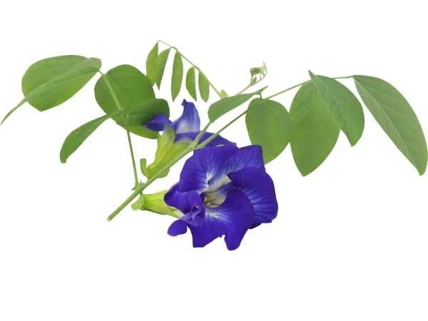

Clitoria ternatea
Common Names: Butterfly Pea, Blue Pea, Asian Pigeonwings, Aparajita, Blue Tea Flower
Local Name: Sangu Pushpam (Tamil), Aparajita (Hindi/Sanskrit)
Family: Fabaceae (Leguminosae)
Origin: Tropical Asia (India, Southeast Asia)
Plant Type: Perennial herbaceous twining vine; nitrogen-fixing legume
Variety: Blue single-flowered (most common); double-flowered and white forms available
Average Lifespan: 2–5 years as perennial; often grown as annual
| Growth Habit | Slender twining herbaceous vine; climbs by twining stems |
| Plant Size | 2–5 meters long; spreads widely on support |
| Leaves | Pinnately compound with 5–7 oval leaflets; bright green; 3–5 cm long |
| Flowers | Vivid deep blue to violet, pea-shaped; 3–4 cm across; white or yellow center; solitary in leaf axils |
| Flower Characteristics | Rich in anthocyanins (natural blue pigment); pH-sensitive color change (blue to purple/pink with acid); blooms year-round in tropics |
| Fruit | Flat linear pods, 5–12 cm long; green turning brown when ripe |
| Seed Characteristics | 6–10 seeds per pod; dark brown, kidney-shaped; 5–7 mm |
| Root System | Deep taproot with nitrogen-fixing nodules; improves soil fertility |
| Climate | Tropical and subtropical; thrives in warm, humid conditions |
| Temperature Range | 20–35°C; frost-sensitive |
| Rainfall Requirement | 600–1500 mm; moderate moisture; drought-tolerant once established |
| Soil Type | Well-drained sandy loam to loam; tolerates poor soils due to nitrogen fixation |
| Soil pH Preference | 5.5–7.5 |
| Sun Requirement | Full sun to partial shade; blooms best in full sun |
| Spacing | 30–50 cm apart; provide trellis or fence |
| Irrigation Method | Regular watering; avoid waterlogging |
| Water Requirement | Moderate; drought-tolerant once established |
| Can it Grow in Pots? | Yes, in medium pots (15–20 liters) with trellis support |
| Fertilizer Schedule | Monthly; low nitrogen (fixes own nitrogen); phosphorus and potassium for flowering |
| Recommended Organic Fertilizers | Compost, vermicompost, wood ash, bone meal |
| Pesticide Frequency | Rarely needed; generally pest-resistant |
| Recommended Organic Pesticides | Neem oil for aphids; hand-pick caterpillars |
| Mulching Practice | Light mulch to retain moisture and suppress weeds |
| Training System | Guide onto trellis, fence, or wire support; self-twining |
| Pruning Time | Trim back after heavy flowering to encourage new growth |
| How to Prune | Cut back by one-third to rejuvenate; remove dead or tangled stems |
| Common Pests | Aphids, pod borers, caterpillars |
| Common Diseases | Powdery mildew, root rot in waterlogged conditions |
| Disease Prevention & Remedies | Good drainage; avoid overhead watering; neem oil spray for fungal issues |
| Flowering Months | Year-round in tropics; peak flowering June–October |
| Fruiting Season | Pods mature 4–6 weeks after flowering |
| Days to Harvest | Flowers ready to harvest daily; pods in 30–45 days |
| Harvest Indicators | Harvest flowers in the morning when fully open; pods when brown and dry |
| Average Yield per Plant | 50–100+ flowers per week during peak season |
| Pollination Type | Self-pollinating; also bee-pollinated |
| Pollination Notes | Cleistogamous (self-pollinating before opening); bees also visit for nectar |
| Pollination Details | Primarily self-pollinating; bees and butterflies also visit |
| Propagation by Seeds | Direct sow; soak seeds 12 hours before planting; germinates in 5–10 days; preferred method |
| Propagation by Cuttings | Stem cuttings possible; root in moist medium with rooting hormone |
| Propagation by Grafting | Not applicable |
| Water Usage | Low; drought-tolerant once established |
| Soil Conservation Practices | Nitrogen-fixing legume; improves soil fertility naturally; used as green manure |
| Organic Practices Used | Minimal inputs; natural nitrogen fixer; excellent for organic gardens |
| Companion Plants | Excellent companion for vegetables; fixes nitrogen for neighboring plants |
| Biodiversity Benefits | Attracts bees, butterflies; supports pollinators; nitrogen enriches soil ecosystem |
| Commercial Production Regions | Thailand, India, Malaysia; grown commercially for blue tea and food coloring |
| Market Uses | Blue tea (butterfly pea tea), natural food dye, herbal supplements, cosmetics |
| Processing Uses | Dried flowers for tea, natural blue/purple food coloring, rice dishes (nasi kerabu) |
| Market Value (Approx.) | ₹500–1500 per kg dried flowers; growing demand in health food market |
| Symbolism | Sacred to Goddess Durga (Aparajita); used in Hindu worship and rituals |
| Traditional Uses | Ayurvedic medicine for memory enhancement; used in traditional Thai and Malay cuisine as natural dye |
| Antioxidants | Rich in anthocyanins, flavonoids, and ternatins (unique blue pigments) |
| Other Key Nutrients | Kaempferol, quercetin, myricetin; anti-inflammatory compounds |
| Anxiety & Sleep | Traditionally used as a mild anxiolytic and sleep aid in Ayurveda |
| Immune Support | Antioxidant-rich flowers support immune function |
| Anti-inflammatory Properties | Ternatins and flavonoids show significant anti-inflammatory activity |
| Digestive Health | Used in traditional medicine for digestive complaints |
Disclaimer: Information provided is for educational purposes only and not a substitute for medical advice.
Add your field observations here.